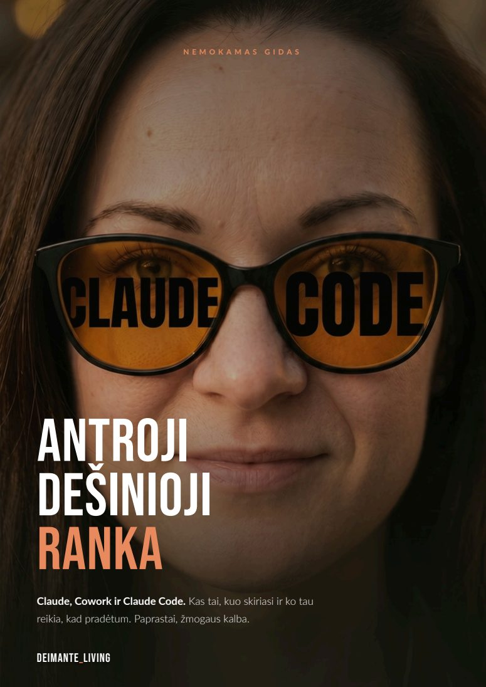
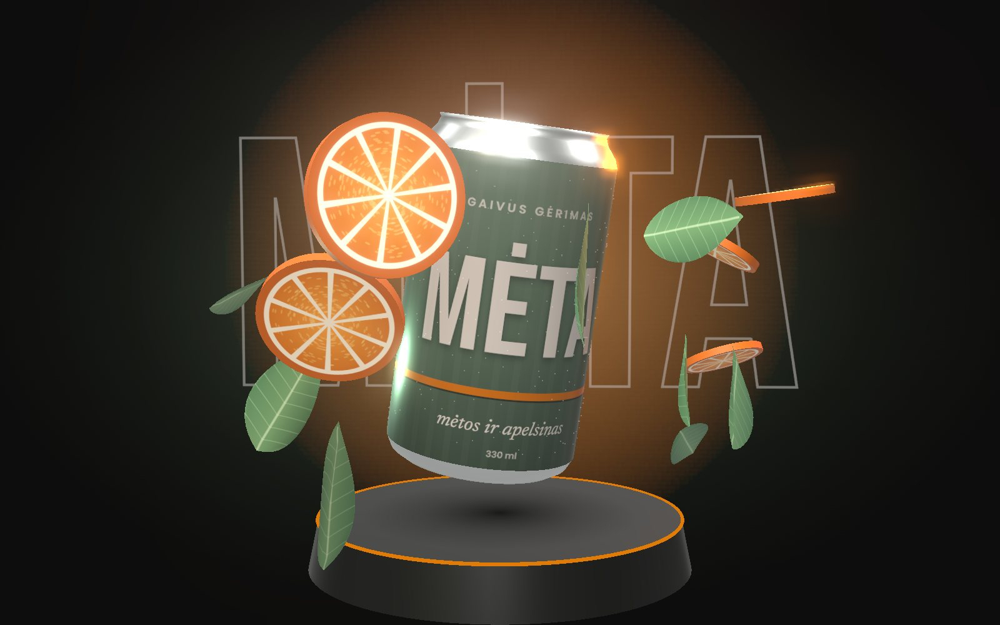
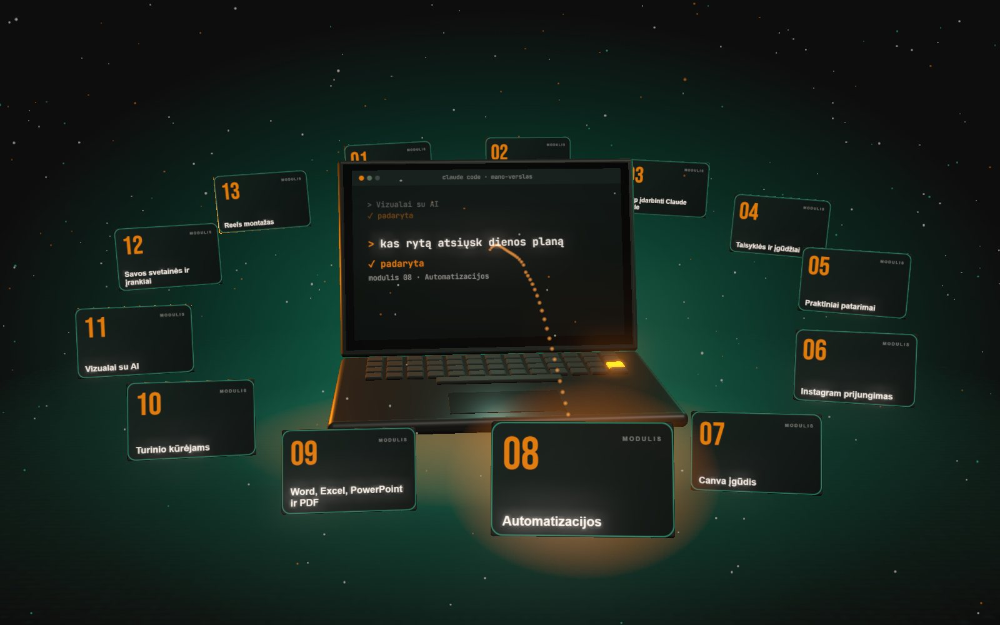

Reels montažas
Įmetu nufilmuotą video, o Claude Code sumontuoja: kirpimai, subtitrai, efektai, nuotraukos ir garsai. Viskas taip, kaip aš noriu.
Išbandyk efektusReels montažas, karuselės, sąskaitos ir net ši svetainė. Pasakau Claude Code paprastais lietuviškais žodžiais, ko noriu, o visa kita jis padaro pats 🫶 Šito išmoksi ir tu, net jei pradedi nuo nulio.
Noriu išmokti ir aš
Man nebereikia visko mokėti. Užtenka žinoti, ko noriu.
Esu Deimantė. Turinio kūrėja, mokytoja ir vienintelė savo verslo darbuotoja 😀
Anksčiau: kiekvienam darbui reikėjo daug žinoti ir daug mokėti. Tekstai, dizainas, sąskaitos ir marketingas gulė ant mano galvos, o laiko turėjau tik nuo 9 iki 15 val.
Dabar: paprastais lietuviškais žodžiais pasakau, ko noriu, Claude Code padaro, o aš peržiūriu. Būtent to ir mokau kitus.
Ne pažadai. Tikri darbai iš mano kasdienybės.
Įmetu nufilmuotą video, o Claude Code sumontuoja: kirpimai, subtitrai, efektai, nuotraukos ir garsai. Viskas taip, kaip aš noriu.
Išbandyk efektus
Aprašau idėją, o skaidres su mano šriftais ir spalvomis sudeda Claude Code.
Parašai komentare GIDAS ir iškart gauni žinutę su nuoroda. Automatiką pastatė Claude Code.

Programėlė iš Stan pardavimų failo išrašo sąskaitas PDF formatu ir veda jų žurnalą.


21 puslapio gidas ir 9 puslapių dovana, sumaketuoti su mano nuotraukomis ir veikiančiais mygtukais.
Ir ši svetainė.
Ją irgi padarė Claude Code. Man tereikėjo pasakyti, ko noriu 🤭
Reels montažas
Nufilmuoju video telefonu ir parašau, ko noriu. Claude Code iškerpa pauzes, uždeda subtitrus mano šriftu ir prideda efektų. Viskas vyksta mano kompiuteryje, be kreditų. Paspausk bet kurį prašymą ir pažiūrėk.
✓ Padaryta: kabliukas už galvos.
Kirpimai, subtitrai ir kadras, kuriame veidas visada toje pačioje vietoje. Kasdieniams reels užtenka ir šito.
Kabliukas už galvos, žurnalo viršelis, kino juosta ir dar daugiau. Prieš montuodamas parodo eskizų lentą, kad galėtum pakomentuoti.
Mac kompiuteryje Claude Code moka valdyti ir pačią Edits programą: sudeda kadrus, subtitrus ir lipdukus ten, kur įprastai darytum rankomis.
Reels montažą žingsnis po žingsnio rodau 13 modulyje.
Noriu išmokti ir aš„Patys geriausi pinigai, kuriuos galėjau išleisti.“
„Aš tikrai nesuprantu programavimo, bet jau darau stebuklus!“
„Jis pats viską perkelia pagal aplankus į kietąjį diską, o aš kavą geriu 😄“
„Per du su puse mėnesio padariau daugiau nei anksčiau per pusmetį“
„Per penkias minutes jis rado priežastį. Pati tikrai nebūčiau to atradusi“
„Be Claude code jau neįsivaizduoju savo dienos“
„Nemėgdavau vektorizuoti… vakar šį mano vargą perleidau Code, kokias 7 min truko jis“
„Jau spėjau susikurti kelis įrankius savo kompiuteryje, kurie gerokai pagreitina kasdienius darbus“
„Viska padare jis aš tik sakiau noriu, kaip viskas turi atrodyti.“
Ir 3D reklamos
Šio gėrimo nėra. Jį sugalvojo ir nupiešė Claude Code, be fotografo, be 3D programos ir be AI kreditų. Lygiai taip pat ir tu gali susikurti judančią reklamą savo produktui, Reels foną ar sceną savo svetainei.
Noriu išmokti ir ašPasuk skardinę pirštu arba pele.

Su prijungtu įrankiu
3D sceną viršuje Claude Code sugalvojo, nupiešė kodu ir parodė, be jokių kreditų. Šį video jis sukūrė pats, tik prijungęs papildomą įrankį: Higgsfield, AI video programą. Vaisiai krenta ir nusileidžia ant pakylos, o užrašas lieka nesugadintas. Mokymuose parodau ir jį, bet jis nebūtinas: be jo išmoksi viską.
Kas laukia mokymuose
Kiekviename modulyje išmoksti vieną darbą perduoti Claude Code. Pasuk kompiuterį pirštu arba pele.

Claude Code nuo nulio
Keturiolika modulių su vaizdo pamokomis, kuriose viską rodau ekrane. Rutiną atiduodi Claude Code, o kūryba lieka tau. Ne teoriškai, o savo kompiuteryje, savo darbams.
Šiandien reikia mokėti vieną: kaip su juo kalbėtis.
Dar neapsisprendei? Pradėk nuo nemokamo gido apie Claude, Cowork ir Claude Code.
Parsisiųsk nemokamą gidąTaip. Programuoti mokėti nereikia. Mokymai lietuviškai ir pradedami nuo nulio, o su Claude Code kalbi paprastais žodžiais. Vienas atsiliepimas taip ir prasideda: „Aš tikrai nesuprantu programavimo, bet jau darau stebuklus!“
Claude Code veikia su mokama Claude prenumerata, ir užtenka pigiausio plano už 22 € per mėnesį. Ją moki tiesiai Claude, daugiau nieko pirkti nereikia. Higgsfield ir kiti AI vaizdo įrankiai yra papildomi, tik jei norėsi.
Taip, abiem. Dirbame Visual Studio Code programoje, kuri veikia ir Windows, ir Mac.
Rašai bendruomenėje bet kada ir sulauki atsakymo. Didesnius klausimus aptariame gyvai per Zoom. Prieiga prie mokymų lieka visam laikui, todėl gali grįžti prie bet kurio modulio.
Taip, tam skirtas visas 13 modulis. Claude Code iš tavo telefono video iškerpa pauzes, uždeda subtitrus tavo šriftu ir, jei nori, prideda efektų. Viskas vyksta tavo kompiuteryje, kreditų nereikia.
Individuali konsultacija
Susėdam ir žiūrim į tai, ką tu darai kasdien. Parodau, kaip Claude Code pritaikyti būtent tavo užduotims, žingsnis po žingsnio ir paprastais žodžiais.